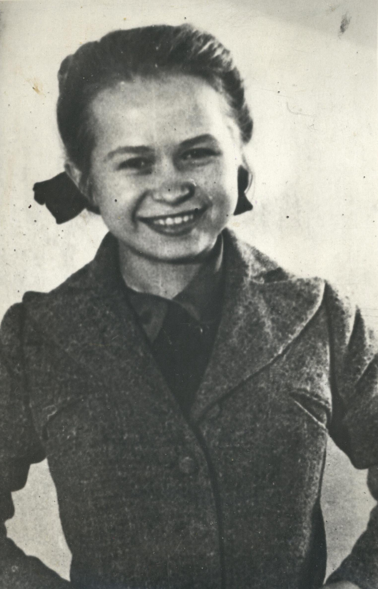

Историческая справка
Александра Николаевна Пахмутова — выдающийся советский и российский композитор, пианистка, общественный деятель, Народная артистка СССР (1984) и Герой Социалистического Труда (1990). Автор более 400 песен, ставших классикой, музыки к фильмам и симфонических произведений, ярко отразивших эпохи комсомольских строек, космоса и дружбы.
Факты о жизни и творчестве
- Музыкальный вундеркинд: первую пьесу для фортепиано «Петухи поют» написала в 5 лет.
- Московская юность: в 1943 году, в 14 лет, приехала в Москву и поступила в Центральную музыкальную школу при консерватории.
- Соавторство длиною в жизнь: познакомилась с поэтом Николаем Добронравовым в 1956 году, брак стал одним из самых крепких в творческой среде.
- Общение с первым космонавтом: была близко знакома с Юрием Гагариным и написала цикл песен «Созвездье Гагарина».
- Страстная футбольная болельщица, поддерживает волгоградский клуб «Ротор».
- Никогда не состояла в КПСС, несмотря на большое количество патриотических песен.
- Песня «Остаюсь с обманутым народом» 1991 года — парафраз стихотворения Ахматовой.
- Сохранила активность и продолжает радовать поклонников своим творчеством.
Мини-таймлайн
1943 — Поступление в Центральную музыкальную школу при консерватории
1956 — Знакомство с Николаем Добронравовым
1984 — Народная артистка СССР
1990 — Герой Социалистического Труда
1991 — Песня «Остаюсь с обманутым народом»
Цитаты
«У нас такая страна — с высокой концентрацией дарований, где талантливые люди были, есть и обязательно будут...»
«Без культуры успеха не добиться»